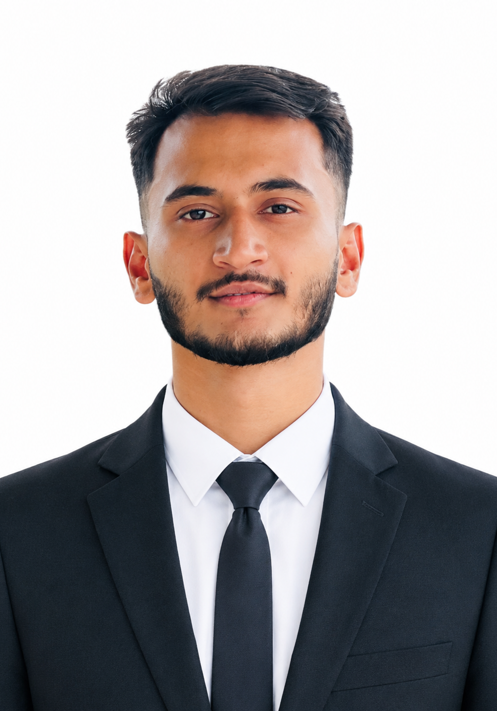
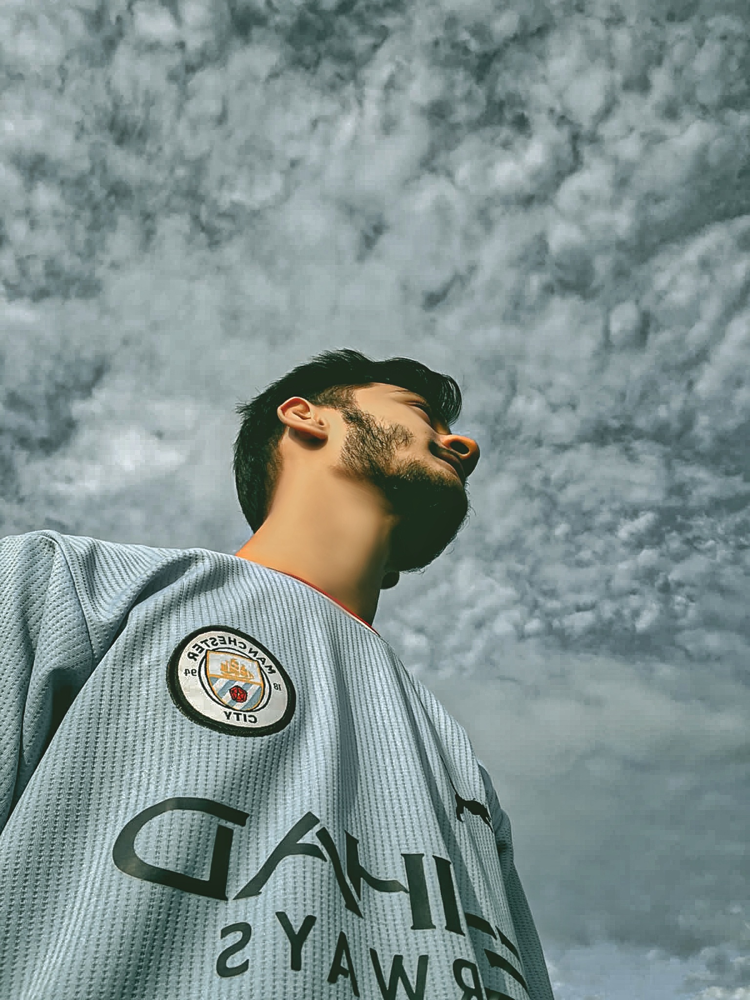

I build clean, modern & user-friendly websites

Hi, I'm Muntasir Mahmud, a passionate Frontend Developer with a strong interest in building clean and user-friendly websites. I love exploring new technologies and constantly improving my skills in HTML, CSS, and JavaScript. Currently, I'm focused on learning modern web development practices and creating projects that solve real-world problems. Outside of coding, I enjoy playing football. I believe in continuous learning and always strive to write better, more efficient code.
Download CV